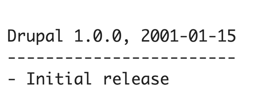

SPH Digital CMS
with Drupal
Survey

- Works in the Media Industry?
- Drupal Developers?
What is Drupal
- It's an open source CMS?
- Started by Dries Buytaert and Hans Snijde in the year 2000
- It's an application development framework
Why Drupal?
Why Drupal?

Open Source
Why Drupal?

Large Community
Why Drupal?

Excellent Security
Why Drupal?

Modular
Why Drupal?

Versatile
Why Drupal?

Quality code
Why Drupal?
Mature
Why Drupal?

Reliable Performance
What are the demands and challenges of developing and maintaining news websites?

Multimedia Storytelling

Challenging the Print Mindset
Structured and Semantic Markup

Urgency

Content curation rules and overrides

Agnostic content and Shareability
Demo
Thank you!
Links and References
- Style Guides by Brad Frost (http://bradfrost.com/blog/post/style-guides/)
- Content & Display Patterns (http://danielmall.com/articles/content-display-patterns/)
- StyleGuides (http://styleguides.io/)
All GIFs from http://uxreactions.com/